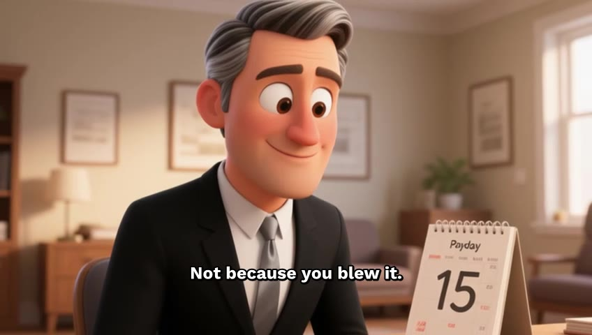

J
JELLY·STUDIO
BY TOLLEY.IO
PUBLIC BETA · INVITE ONLY
The most affordable way
to make faceless videos.
Pay only for what you render.
No subscription. No commitment.
Most long-form videos cost $1–7.
▸tolley.io/animate
Cloned voice · generated scenes, not stock · no watermark
Made in Jelly Studio3:24
